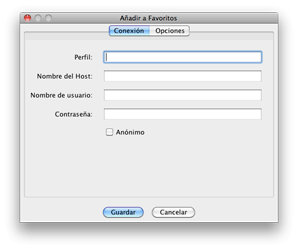
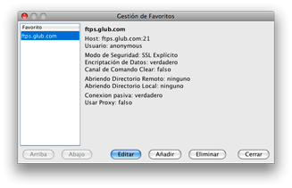

Favoritos
Al hacer las conexiones, es posible que usted las quiera añadir a
favoritos de modo que más tarde puede volver a ellas rápidamente.
Añadir a favoritos

Hay tres maneras de añadir a la lista de favoritos sus sitios FTP preferidos.
- Añadir desde el diálogo de Abrir Conexión.
- Añadir
desde la opción Añadir Favorito del menú de favoritos.
- Añadir desde la opción Gestión de Favoritos del menú de favoritos.
Si sabe de antemano que va a querer añadir un favorito después de logearse,
la manera más sencilla de hacerlo es seleccionar la opción Añadir a Favoritos
en el diálogo de Abrir Conexión. Después de conectarse, este sitio
se habrá añadido a la lista de favoritos. Por defecto el nombre del archivo
será el mismo que el del host. Puede cambiarlo posteriormente editando las
propiedades de favoritos en el diálogo Gestión de Favoritos
Si ya se ha logeado o si desea añadir un favorito sin logearse,
puede realizar esta acción desde el menú de favoritos seleccionando la
opción Añadir a Favoritos del menú. Aquí podrá guardar toda la
información pertienente.
Gestión de Favoritos

Una vez que se ha añadido un elemento como favorito, tiene la opción de editar
la información almacenada desde el diálogo Gestión de Favoritos. Puede
acceder a este diálogo seleccionando la opción Gestión de Favoritos
en el menú de Favoritos. Aquí tendrá la posibilidad de organizar el orden
de los favoritos, editar sus atributos, añadir nuevos o eliminarlos.
Favoritos Globales
Hay un tipo de favorito que usted podrá usar pero no editar.
Son los llamados favoritos globales. Estos favoritos globales no son
diferentes de su copia local, pero estos se obtienen mediante una URL bajo HTTP
que se puede establecer en las preferencias. La URL debe apuntar a un archivo XML
FTP seguro 2.5.